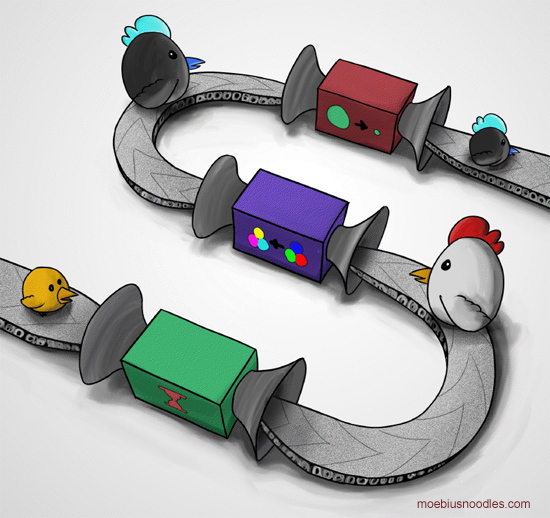
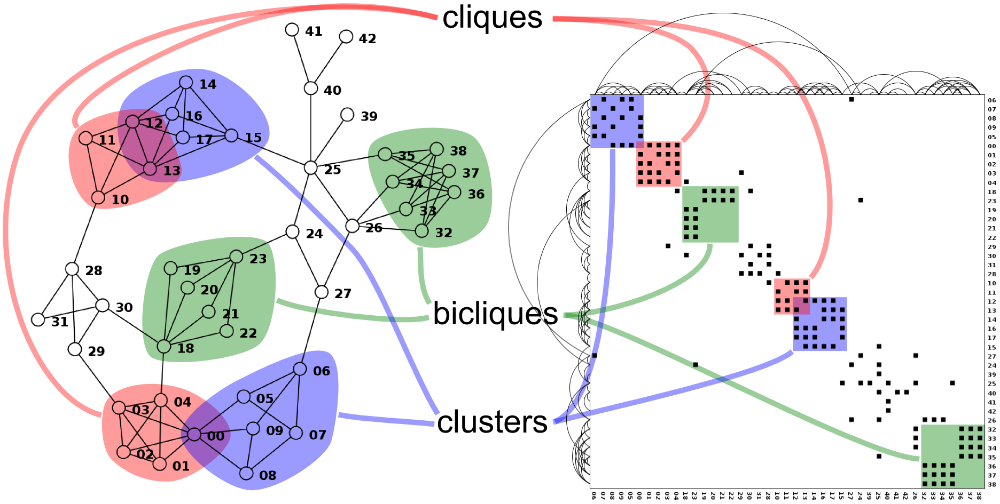

Functional
Programming
for rubists
Nikolay Ryzhikov

Функции
применяються
Данные
значения
Нет объектов и классов
Чистые Функции
list = [1, 2, 3]
new_list = push(list, 4)
puts list # => [1, 2, 3]
puts new_list # => [1, 2, 3, 4]
Чистые Функции
mapa = {a: 1}
new_mapa = assoc(mapa, :b, 2)
puts mapa #=> {a: 1}
puts new_mapa #=> {a: 1, b: 2}
Всегда одно и тоже
cos(π) => 1cos(π) => 1cos(π) => 1Чего бы вокруг не происходило
cos(π) => 1Вообще ничего
не поменять
И нет переменных
Вообще ничего не прячут
передавать все явно
Kомпозиция
f(g(h(x)))
f.g.h x
(-> (h x) g f)
У нас Программы - графы
A у них - деревья
Не выполняются

а вычисляються
Функции высших порядков
Принимают функции
параметризация вычисления
Возвращают функции
конструкторы вычислений
fold (reduce)
# fold(col, init-value, &proc)
sum = fold([1,2,3], 0,+)
prod = fold([1,2,3], 0,*)
map = fn (f, col)
fold col, [] do |acc,x|
push(acc,f(x))
end
end
filter = fn (pred, col)
fold col, [] do |acc,x|
pred(x) ? push(acc,f(x)) : acc
end
end
wrap (middle-ware)
fn wrap(f)
fn (x)
if ???
f(x)
else
return ???
end
end
end
Like our decorators
or chain of responsibility
compose wrappers
f' = wrap(f)
f'' = other_wrap'(f')
....
....
....
f''''(x)
Transducers
# chain(acc,elem)
chain = compose(
filter(odd?),
map(double),
take(5)
)
reduce(chain, [], coll)
собираем вычисление, потом выполняем
Изменяемое состояние
Software Transactional Memory
# isolation
transaction do
change(state1)
change(state2)
end
Ни тебе race condition, dead lock, incosistent read
Функциональное ядро
А как они пишут WEB?
Web Server у них функция
fn server(req)
return {
status: 200,
body: "Hello",
headers: {
ContentType: 'text'
}
}
end
server({uri: "/home", params: {q: '???'}})
Обертки для Middle-Ware
server = compose(
wrap_params,
wrap_cookies,
wrap_json_request,
wrap_form_params,
dispatch
)
server(request)
Наш rack
Routing
# dispatch(request, routes_spec) -> handler
fn dispatch(request, routes_spec)
handler = find_in_routes(request, routes_spec)
handler(request)
end
Они ничего не знают про паттерны
Route Spec просто данные
route_spec = {
admin: {
users: {
POST: users/create
GET: users/index
}
}
}
route_spec = [
["admin", "users", "POST", users/create],
["admin", "users", "GET", users/create],
]
1-3 files; ~100 SLOC total
gem "journey"
1.6K SLOC + 1.5K tests
*10 times bigger
View & Templating у них тоже функция
fn layout(content)
[:html,
[:header,
[:title "layout"]],
[:body, menu() content]]
end
def render(data)
layout(
[:ul, map data {|x|
[:li, link_to(x.url, x.text)]}]
end
~600 SLOC + form builder
Я же говорю одни функции
layout1(
layout2(content1()),
layout3(content2())
)
def decorate_user(user)
user[:full_name] = user[:first_name] + user[:last_name]
user
end
def link_to(url, label)
[:a, {href: url}, label]
end
нет проблем с лайаутами и хэлперами
haml
2.6K SLOC + 3K tests
*10 times bigger
А ORM?
Ups, а объектов то нет
А работа с базой?
query = {
select: [:id, :name], from: "users",
where: [:name "=" x]
}
fn by_name(name, query)
merge(query, :where,["name", "ilike", name])
end
fn active_users(query)
merge(query, :where,["status", "=", "active"])
end
conn/exec( sql( active_users( by_name("nicola", query)))
опять функции ~ 800 SLOC
Arel
3.4K SLOC + 5K tests
Функциональный Web?
String:HTTP -> fns -> String:SQL -> DB -> fns -> String:HTTP
Функциональный UI?
State -> ui_function -> VirtualDom -> React.diff/patch -> DOM
Event -> change State -> State'
State' -> ui_function -> VirtualDom -> React.diff/patch -> DOM
А фреймворки есть?
Почти нет, много маленьких библиотек,
которые легко склеиваются
А почему они маленькие?
Сильно сфокусированны на задаче
SOLIDные
Но мы тоже
Почему мы тогда тратим в 10 раз больше сил?
Почему композиция - проблема?
Почему декомпозиция тоже проблема?
Почему в рабстве у фреймворка?
Почему нам нужно
больше думать?
- SOLID?
- Service Object?
- DCI?
- Mixins/Traits?
а они просто для этого пишут функцию